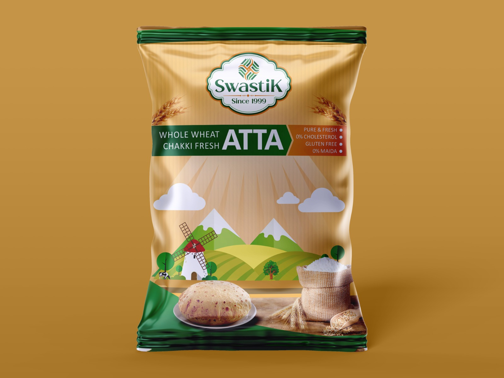
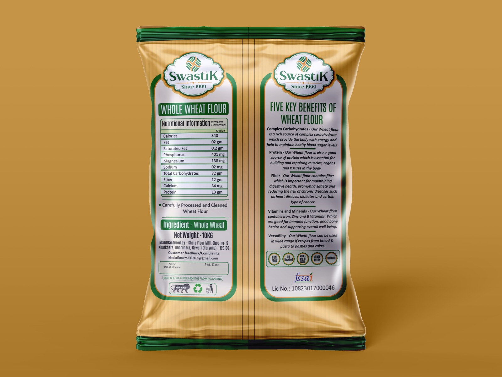

Grinded Today. Delivered Today. Quality Trusted Since 1999.
For over two decades, Khola Flour Mill has been a cornerstone of purity in Rewari. What started in 1999 near the sacred Hanuman Mandir in Village Kharkhara has grown into the trusted brand Swastik.


We use the "Chakki" method to ensure the wheat is ground at a low temperature, preserving the natural oils, vitamins, and fiber of the grain.
Our Atta is 100% Whole Wheat with zero Maida and no added preservatives. We believe in providing the same quality we would serve at our own table.
Rooted in Kharkhara, Haryana, we take pride in supporting our local farmers and providing high-quality wheat bran for our community's livestock.
We avoid high-speed steel rollers that strip natural oils. Our stone-grinding preserves the germ, bran, and essential nutrients.
No chemicals. No additives. Just 100% pure whole wheat, ground and delivered to your doorstep.
Serving the wider region with fresh quality:
Dharuhera, Bawal, Rewari, Bhiwadi, Manesar, and Pataudi.
Free Delivery: Within 3km of mill | Bulk Free Delivery: Within 20km for 40kg+ orders.